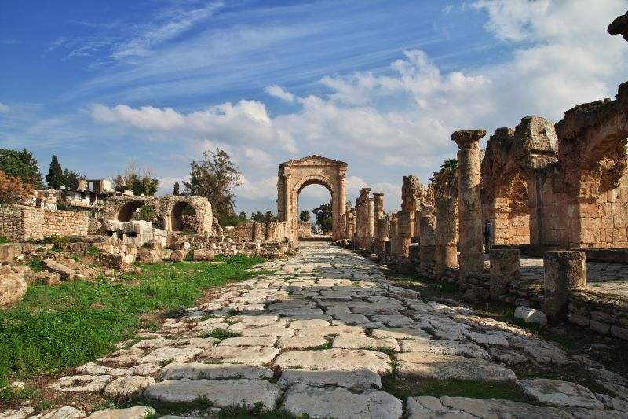
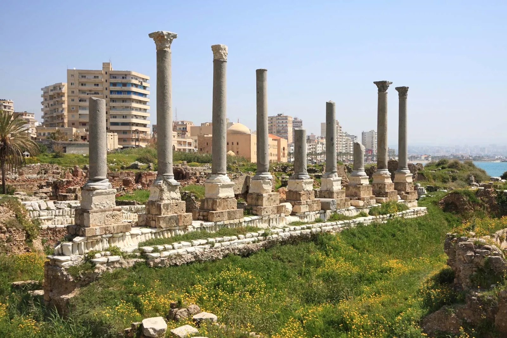

"Located on the southern coast of Lebanon, 83 km south of Beirut, the antique town of Tyre was the great Phoenician city that reigned over the seas and founded prosperous colonies such as Cadiz and Carthage and according to legend, was the place of the discovery of purple pigment."~UNESCO
 